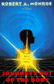
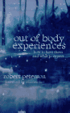

| Home � Psi Balls � Shields � Kinesis' � Astral Travel � Telepathy � Aura Vision � Books � Links |
|
|
| |
Listed below are books that I've read and any other books that someone has reviewed and sent to me. Feel free to tell me about a book you read that helped you. If you want to buy a book, I suggest amazon.com - they got it all  .
.
|  | Journeys Out Of The Body by Robert A. Monroe Awesome book! Robert Monroe is a left-brained guy having right-brained experiences. This means he's scientific about everything! A fun book to read and it really teaches you a lot. Although he doesn't give a lot of information on how to get out (he does give a little), it's still a super-cool book. |
| Out Of Body Experiences: How To Have Them And What To Expect by Bob Peterson Another awesome book on astral projection. I would suggest this to anyone... Peterson is an awesome writer and his book shows it. It's free online too, so if you're a cheap-skate (like me ) check it out: http://www.winternet.com/~rsp/obebook.html
|
 |
| Astral Travel For Beginners by Richard Webster Good book, it definitly gives you a lot of methods and tells you a lot about the astral plane, but theres some things I didn't like. Just some of his beliefs that I didn't agree with shinned through his book... nothing major. A good book overall though, I'd look at some others before I went with this one though. |
| The Truth About Uri Geller by James Randi Pretty good book, I know I don't believe that Uri Geller is real after this. I know it's a skeptics book but, it's good. That's all there is to it. Randi pretty much tells all these times where Uri faked and debunks all the scientific evidence that he is real. Randi is a good guy, just a little closed minded. Geller I think is fake, read this book before you make your opinion. On a magicians stand-point, he doesn't say how he did most of his tricks (I was looking forward to that ).Rainsong: I guess we'll just have to agree to disagree on Randi the Rabid Skeptic. Skepticism is a good thing. Fraudulant misrepresention of scientific data is quite a different kettle of fish. Not that I necessarily believe that his claims about Uri Geller are false, specifically...I don't know enough about Geller to comment one way or the other. I simply would not take Randi's word for it. |
| Holy Bible The Holy Bible, am I nuts ? Heh, maybe. Believe it or not this book has a lot of good things in it. Although some parts piss me off, it has a lot of spots where I say "yeah, thats true." I know I'm pagan but aren't we all after the truth? Not all of it is true, I don't think anyone should expect that, but enough to put it up here. Don't get me wrong, I'm definitly pagan (don't get me started ), but there are a lot of good messages here. |
 ? E-mail me at
? E-mail me atpeebrain1@hotmail.com | |
| Home � Psi Balls � Shields � Kinesis' � Astral Travel � Telepathy � Aura Vision � Books � Links |
|